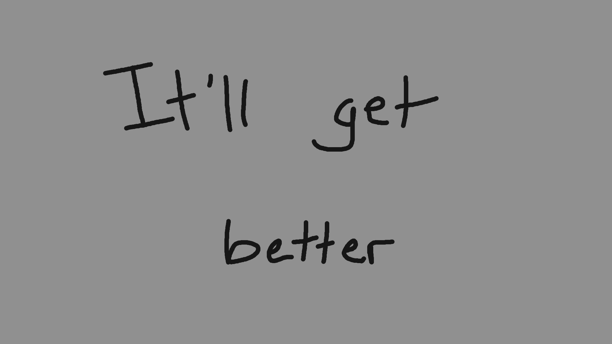

To start us off, I have provided a very pared-down rc.lua and theme folder. From this (barely functional) base, we will build towards a usable and customized awesomeWM setup, learning as we go.
I recommend using awmtt throughout the process, as it will make your life a whole lot easier. To set everything up, copy the contents of the starting-config folder into your .config/awesome folder. awmtt should start up using the provided rc.lua.test by default.
Using awmtt is pretty simple - just type awmtt start in a terminal. If the default window size is too small, add an -S option (that's a capital S): something like awmtt start -S 1920x1080. Once the window is open, press CTRL+Shift to focus mouse and keyboard input (so you don't wreak havoc on your main desktop while testing things). Pressing CTRL+Shift again will release focus.
In order to reload awesome with the changes you've made to rc.lua.test, close awmtt with awmtt stop and then rerun the start command you used previously. Don't worry, you won't have to do this for long.
Once everything is up and running, you should be greeted with a window that looks like this:
You can't do anything with it yet, because of how stripped down the functionality is, but that's where the "get better" part comes in. So, let's get started!